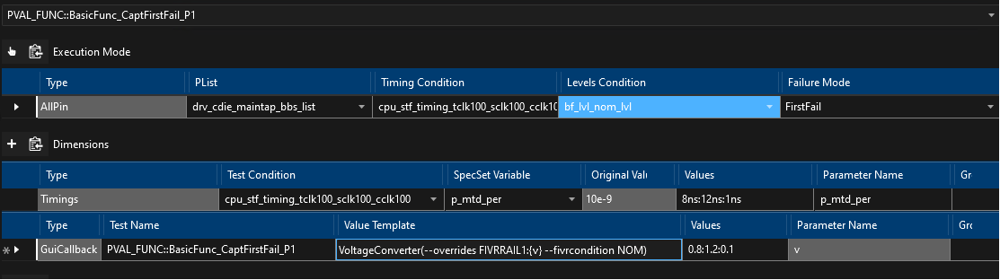

Prime3.00.00 introduced a new Callback mechanism where user can register and call custom code within the library. Methodology is documented in their wiki page:
https://dev.azure.com/mit-us/PRIME/_wiki/wikis/PRIME.wiki/3028/Callbacks
DDG Prime CallbacksManager is a “temporary” solution to execute multiple pre-registered callbacks using a single callback.
Call will not override the assigned port. Port is assigned by test class and no callbacks.
Call(Function1(args1) | … | FunctionN(argsN))
PreInstance = Class(PrintToConsole(Hello World) | PrinToConsole(Hola Mundo))
Prime callbacks can be used in the TOS Gui shmoo using the "GuiCallback" dimension. The "Value Template" argument should be Function(args1 args2 args3) format. Use {var} to specify values to shmoo.
Example:

Example (saved as json):
{
"TestInstance": "PVAL_FUNC::BasicFunc_CaptFirstFail_P1",
"ExecutionModes": [
{
"Type": "AllPin",
"FailureMode": 0,
"PList": "drv_cdie_maintap_bbs_list",
"Level": "bf_lvl_nom_lvl",
"Timings": "cpu_stf_timing_tclk100_sclk100_cclk100"
}
],
"Dimensions": [
{
"Type": "Timings",
"SpecSetVariable": "p_mtd_per",
"TestCondition": "cpu_stf_timing_tclk100_sclk100_cclk100",
"ParameterName": "p_mtd_per",
"Values": "8ns:12ns:1ns",
"Group": ""
},
{
"Type": "GuiCallback",
"ValueTemplate": "VoltageConverter(--overrides FIVRRAIL1:{v} --fivrcondition NOM)",
"TestName": "PVAL_FUNC::BasicFunc_CaptFirstFail_P1",
"ParameterName": "v",
"Values": "0.8:1.2:0.1",
"Group": ""
}
],
"Options": []
}